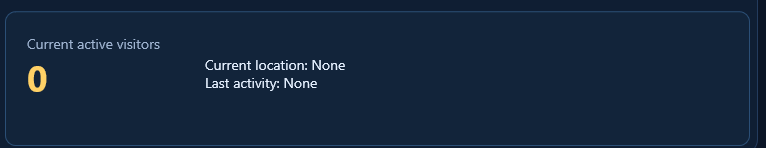

Realtime Activity

Realtime shows current active visitors and current/last activity information when GA4 returns it.
- Realtime data can differ from standard reports because it comes from a different GA4 endpoint.
- Location is shown only when GA4 returns usable location data.
- Last activity resets when the selected property changes.